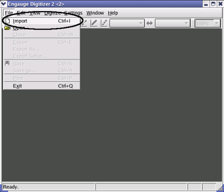
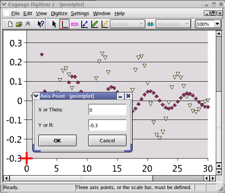
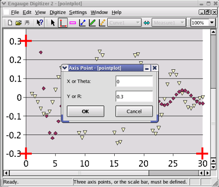
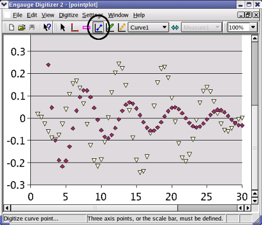
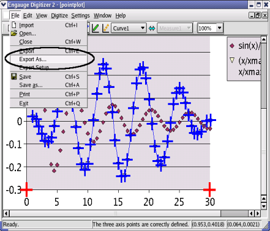

Engauge Digitizer - Manual Point Graph Tutorial
Engauge Digitizer - Manual Point Graph Tutorial
Manually Digitizing A Point Graph Image
The following steps manually digitize a linear cartesian graph with
points along one curve. These steps are essentially the same as the
steps involved in manually
digitizing a line graph.
- Import the pointplot.bmp case from the Samples directory, using
File/Import as shown. Not shown are the other methods of importing:
using the "-import" command line option,
by copying and pasting, and by dragging and dropping

- Click on the Axes Point button before entering axes points. These will
define the coordinate system

- Click on one of the axes to add the first axes point, then enter its
graph coordinates

- Click on one of the axes to add the second axes point, then enter its
graph coordinates

- Click on one of the axes to add the third axes point, then enter its
graph coordinates

- Click on the Curve Points button before entering curve points. These
will contain the digitized graph data

- Click on the curve to add a curve point. Repeat until all of the
points in the original image are digitized. If this step is too
slow and tedious, you can first automatically digitize many points
in one step using point match

- Export the curve points into a tabular text file using the
File/Export As menu option as shown. Not shown are the other methods of
exporting the curve points from the
curve geometry window: copying and pasting,
and dragging and dropping
